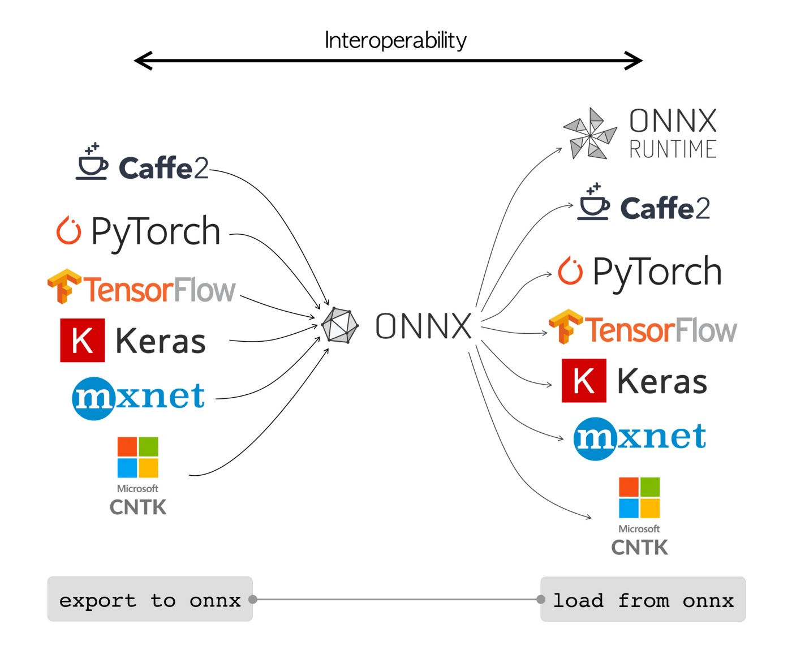
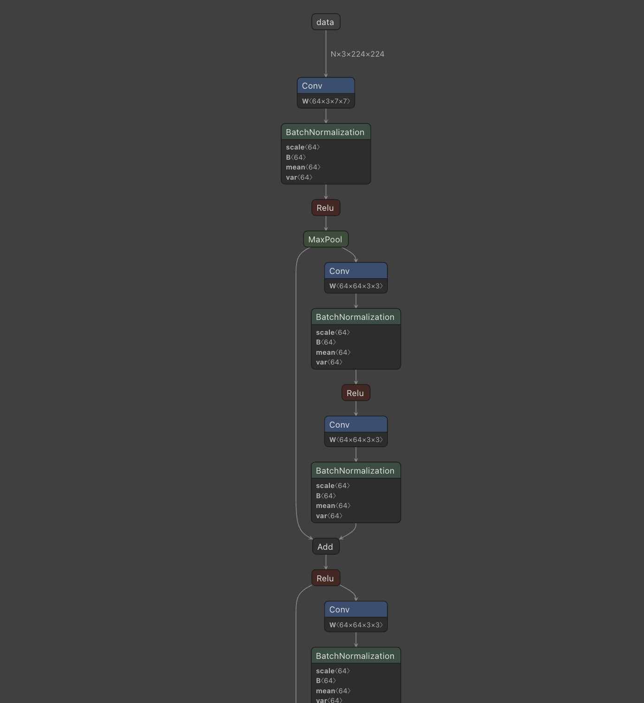

- 참조
- 개요
- ONNX(Open Neural Network Exchange)란?
- ONNX로 변환하면 실제로 어떤 결과물을 얻을까?
- 무슨 변환이 이루어질까?
- PyTorch Model을 ONNX Model로 변환하기
- ONNX의 opset_version
- 마치며
참조
https://gaussian37.github.io/dl-pytorch-deploy/#onnx에-shape-정보-저장-1
https://tech.kakaopay.com/post/model-serving-framework/
https://tutorials.pytorch.kr/advanced/super_resolution_with_onnxruntime.html
https://onnx.ai/onnx/index.html
개요
최근, 회사에서 서비스화를 진행하는 AI 모델의 경량화를 맡게 되었습니다. 모델은 Nvidia GPU를 사용하는 서버에서 구동될 예정이어서 TensorRT로 모델을 경량화 하는 것으로 방향을 잡았습니다.
TensorRT를 사용하여 경량화 하기 위해서는 우선 모델을 ONNX로 변환해야 할 필요가 있었습니다. 물론, 현재 Torch-TensorRT라는 것이 있긴 하지만, 제가 원하는 Int8 양자화 기능을 찾지 못했습니다. 때문에 겸사겸사 ONNX에 대하여 스터디해 보았습니다.
ONNX(Open Neural Network Exchange)란?
ONNX는 ML Model을 표현하기 위한 Format의 한 종류이며, Open Source로 공개되어 있습니다.
AI 개발자가 다양한 프레임워크, 도구, 런타임 및 컴파일러와 함께 모델을 사용할 수 있도록 공통 연산자 세트(기계 학습 및 딥 러닝 모델의 빌딩 블록)와 공통 파일 형식을 정의합니다.
세상에는 현재 많은 ML/DL Framework(ex: Pytorch, TensorFlow, Caffe)가 존재합니다. 우리는 이 Framework을 토대로 모델을 훈련하고, 그 결과 훈련된 모델을 얻습니다.
여기서 ‘훈련된 모델’은 어떤 Framework를 사용해서 훈련했느냐에 따라서 그 내부적인 구조와 구현도 제각각입니다. 똑같은 Resnet50 아키텍처라도 Framework간에 서로 호환되지 않습니다. 예를 들어 Pytorch에서 훈련한 Resnet50을 TensorFlow에서는 사용할 수 없습니다.
하지만, 서로에게 약속된 공용 포맷이 있다면 변환을 통해 사용할 수 있을 것입니다.
==예) Pytorch Resnet50 → ( 어떤 공용 포맷 ) → TensorFlow Resnet50
- ONNX는 위 예시에서의 ‘어떤 공용 포맷’ 역할을 해줍니다.
==

ONNX는 딥러닝 모델을 표준화된 형식으로 표현하고 공유할 수 있게 해주는 오픈소스 프로젝트입니다. ONNX는 다양한 딥러닝 프레임워크 간에 모델을 쉽게 변환하고 공유할 수 있도록 함으로써, 다른 프레임워크를 사용하는 환경에서 모델의 이식성을 높일 수 있습니다.
ONNX는 딥러닝 모델을 표현하는데 사용되는 중간 표현(Intermediate Representation) 형식입니다. 이 중간 표현은 모델의 아키텍처, 가중치, 그래프 연산 등을 포함하고 있어 다양한 딥러닝 프레임워크에서 해석할 수 있습니다. ONNX를 사용하면 훈련된 모델을 변환하고, 추론 엔진에서 실행하고, 다른 프레임워크로 내보낼 수 있습니다.
ONNX로 변환하면 실제로 어떤 결과물을 얻을까?
우리가 기존에 모델을 불러와 사용할 때 두 가지가 필요합니다.
-
모델의 아키텍쳐의 정보(ex: Resnet50.py)
-
그 아키텍처의 Weight 파일(ex: Resnet.50_epoch10.pth
그러나 ONNX로 변환하면 이 두 가지가 합쳐져서 .onnx 파일 하나만 생성됩니다.
무슨 변환이 이루어질까?
우리가 만약 PyTorch로 훈련한 Resnet18을 ONNX로 변환한다면, 내부적으로는 어떤 일을 하는 것일까요? ONNX는 ‘공용 포맷’ 입니다. 따라서 어떤 Framework의 코드도 사용할 수 없습니다. 특정 Framework의 코드를 사용한다면, 이미 공용이 아니고 해당 Framework에 종속된 것이니까요. 따라서 ONNX로 변환할 시에는 우리가 만든 모델의 아키텍처를 하나 하나 뜯어서 ONNX가 자체적으로 제공하는 Operator로 변환하는 작업을 합니다.
우리가 직접 Resnet을 구현해야 한다면 대부분 Residual Block을 구현한 뒤, Residual Block을 가져와 Resnet을 종류별로 구현할 것입니다. 이렇게 해야 코드가 늘어나는 것을 피할 수 있고, 쓰는 우리도 편리하고, 이해하기도 편합니다. 이곳을 보시면 TorchVision의 Resnet18에 대한 구현을 볼 수 있습니다.
이 이야기를 한 이유는 ONNX로 변환한 결과는 위 모듈 구조들이 모두 사라지고, 연산을 위한 Operator들 간의 Graph가 남기 때문입니다. 이곳에는 Resnet18을 onnx로 변환한 모델이 있습니다. 이 파일을 다운로드한 뒤, Netron이라는 ONNX Viewer로 열어보면 아래와 같은 구조를 볼 수 있습니다.

이 결과를 통해 알 수 있는 점은 다음과 같습니다.
- ONNX로 변환하면, 사람이 짜놓은 모듈 구조들이 모두 무너진다.
- 모델이 복잡해질수록 ONNX 파일만 보고 모델의 구조를 파악하는 것은 어려울 것이다.
- ONNX를 다시 변환 전의 상태로 변환할 수 없다.
-
Resnet18.onnx를 가지고 TorchVision의 Resnet18처럼 모듈화된 아키텍처를 만들 수 없다.
-
따라서, ONNX 변환을 통해 다양한 Framework에서 사용할 수 있다고 할지라도, 이는 Inference만 해당될 것입니다. (사실 Inference가 가능하다는 것은 Train도 가능하다는 것을 의미하지만, 모델을 ONNX 변환한 뒤 훈련할 이유는 없다고 생각합니다)
PyTorch Model을 ONNX Model로 변환하기
아래 코드는 Pytorch 공식 문서에서 제공하는 것으로, Super Resolution Model을 ONNX로 export 하는 예시를 보여줍니다.
# 필요한 import문
import io
import numpy as np
import torch.utils.model_zoo as model_zoo
import torch.onnx
import torch.nn as nn
import torch.nn.init as init
# PyTorch에서 구현된 초해상도 모델
class SuperResolutionNet(nn.Module):
def __init__(self, upscale_factor, inplace=False):
super(SuperResolutionNet, self).__init__()
self.relu = nn.ReLU(inplace=inplace)
self.conv1 = nn.Conv2d(1, 64, (5, 5), (1, 1), (2, 2))
self.conv2 = nn.Conv2d(64, 64, (3, 3), (1, 1), (1, 1))
self.conv3 = nn.Conv2d(64, 32, (3, 3), (1, 1), (1, 1))
self.conv4 = nn.Conv2d(32, upscale_factor ** 2, (3, 3), (1, 1), (1, 1))
self.pixel_shuffle = nn.PixelShuffle(upscale_factor)
self._initialize_weights()
def forward(self, x):
x = self.relu(self.conv1(x))
x = self.relu(self.conv2(x))
x = self.relu(self.conv3(x))
x = self.pixel_shuffle(self.conv4(x))
return x
def _initialize_weights(self):
init.orthogonal_(self.conv1.weight, init.calculate_gain('relu'))
init.orthogonal_(self.conv2.weight, init.calculate_gain('relu'))
init.orthogonal_(self.conv3.weight, init.calculate_gain('relu'))
init.orthogonal_(self.conv4.weight)
# 위에서 정의된 모델을 사용하여 초해상도 모델 생성
torch_model = SuperResolutionNet(upscale_factor=3)
# 미리 학습된 가중치를 읽어옵니다
model_url = 'https://s3.amazonaws.com/pytorch/test_data/export/superres_epoch100-44c6958e.pth'
batch_size = 1 # 임의의 수
# 모델을 미리 학습된 가중치로 초기화합니다
map_location = lambda storage, loc: storage
if torch.cuda.is_available():
map_location = None
torch_model.load_state_dict(model_zoo.load_url(model_url, map_location=map_location))
# 모델을 추론 모드로 전환합니다
torch_model.eval()
# 모델에 대한 입력값
x = torch.randn(batch_size, 1, 224, 224, requires_grad=True)
torch_out = torch_model(x)
# 모델 변환
torch.onnx.export(torch_model, # 실행될 모델
x, # 모델 입력값 (튜플 또는 여러 입력값들도 가능)
"super_resolution.onnx", # 모델 저장 경로 (파일 또는 파일과 유사한 객체 모두 가능)
export_params=True, # 모델 파일 안에 학습된 모델 가중치를 저장할지의 여부
opset_version=10, # 모델을 변환할 때 사용할 ONNX 버전
do_constant_folding=True, # 최적화시 상수폴딩을 사용할지의 여부
input_names = ['input'], # 모델의 입력값을 가리키는 이름
output_names = ['output'], # 모델의 출력값을 가리키는 이름
dynamic_axes={'input' : {0 : 'batch_size'}, # 가변적인 길이를 가진 차원
'output' : {0 : 'batch_size'}})위 과정을 요약하면 다음과 같습니다.
- Pytorch 모델 인스턴스를 생성하고, 학습된 가중치를 모델에 로드한다.
- 모델 입력 값을 선언한다.
- 모델을 추론 모드로 전환하고, 선언한 입력 값을 1회 인퍼런스 한다.
- 모델 인스턴스와 모델 입력 값을 파라미터로 onnx로 export 한다.
ONNX의 opset_version
위 과정에서 눈여겨 볼 부분은 onnx로 export하는 부분입니다. 잘 보면 파라미터 중에 아래와 같은 문구가 있습니다.
opset_version=10, # 모델을 변환할 때 사용할 ONNX 버전
ONNX 변환에 별도로 버전을 파라미터로 준다니, 버전은 높으면 무조건 좋은 것이 아닐까요? 해답은 공식 문서에 있었습니다. 이곳에는 ONNX가 제공하는 Operator가 있습니다. 아래 Table은 그 일부를 발췌한 것입니다.
| operator | versions | differences |
| Abs | 13, 6, 1 | 13/6, 13/1, 6/1 |
| Acos | 7 | |
| Acosh | 9 | |
| Add | 14, 13, 7, 6, 1 | 14/13, 14/7, 13/7, 14/6, 13/6, 7/6, 14/1, 13/1, 7/1, 6/1 |
| And | 7, 1 | 7/1 |
앞서 ONNX의 변환은 해당 Framework의 operator를 ONNX operator로 변환하는 과정이라고 설명드렸습니다. 이것은 즉 ONNX가 지원하지 않는 Operator를 모델에서 사용했다면 변환할 수 없다는 것을 의미합니다. Table을 쭉 훑어보면, DeformConv Operator(deformable convolution)의 경우 19 버전에서 추가되었으므로, 그 이전 버전으로는 변환할 수 없습니다.
또한 Table의 우측 Column은 같은 Operator라도 버전에 따라서 차이가 존재할 수 있음을 암시합니다. 이 링크는 위 Table에서 Abs operator의 13과 6 버전의 차이에 관해 설명된 글입니다. 내부 구현이 조금 달라진 것을 알 수 있습니다. 따라서 opset_version에 따라 모델의 성능이 달라질 수 있다는 것을 알 수 있는 부분입니다.
마치며
이번 포스팅에서는 ONNX의 기초 개념과 onnx 파일 내부가 어떻게 되어 있는지 알아보았고 Pytorch 모델을 ONNX로 변환하는 코드에서 “opset_version”이 의미하는 것이 무엇인지를 다뤄보았습니다.
PyTorch를 배우면서 느꼈던 생각이
“작은 모델이라면 상관 없지만 복잡하고 큰 모델일수록 여러 script의 모듈을 참조하고 혹은 추가 패키지까지 설치하게 되는데 서빙하는 단에서 이 종속성을 모두 챙겨야 한다면 너무 불편할 것 같다”
였습니다.
하지만 현업에서 ONNX로 export하여 서빙하는 곳들이 있다는 것을 알게 되었고, 이번에 ONNX에 대해 공부하게 되면서 그 이유를 조금이나마 알게 된 것 같습니다.
ONNX로 변환하게 되면 더 이상 수정하기 어려운 상태가 되지만 별도로 다른 부속품들을 챙길 필요 없이 onnx 파일과 파일을 Inference 할 수 있는 Engine만 있으면 되기 때문입니다.
ONNX에는 ONNX-Runtime이라는 강력한 인퍼런스 엔진이 있는데, 이것도 굉장히 매력적인 프로젝트라고 느껴집니다. 때문에 다음에 기회가 되면 다뤄보고 싶습니다.